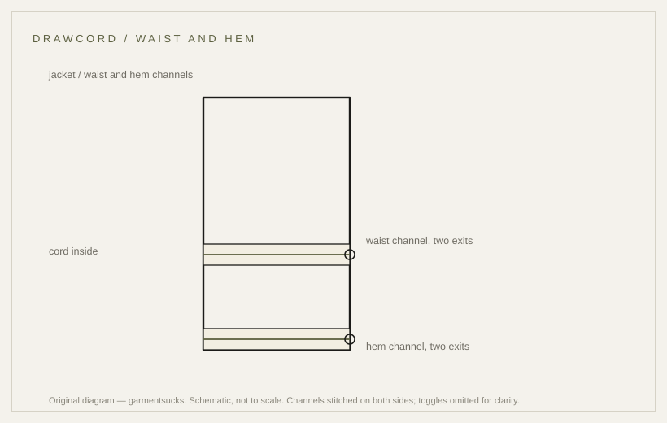

closure · 1965
The drawcord: waist and hem, no buckle
The invisible belt: a cord inside the waistband that does what a belt does without the buckle.
probable Published 2026-11-13 · last checked 2026-11-13

1. Summary
A drawcord is a cord running inside a channel at the waist or hem, tightened to close the garment against weather and to change its fit.
The US Army maintenance manual describes the M-65 cold weather coat as having waist and hem drawcords. Confidence: probable — the manual records the presence; why they were fitted is inference.
2. What this is
Drawcord: a cord inside a stitched channel, with exits at one or both sides so it can be pulled and tied. A toggle is a small slider that holds the cord. The channel is the folded and stitched strip that keeps the cord in place.
The cord may be a flat braid or an elastic braid; the manual's commodity list includes MIL-T-43303, Cord, Elastic, Cotton.
3. Origin and context
The manual identifies the Coat, Cold Weather as cotton and nylon wind-resistant sateen, MIL-C-43455, class 1, Army Shade OG-107, with NSNs 8415-00-782-2933 through 8415-00-782-2945, and states that waist and hem drawcords are provided.
The same document's maintenance instructions for the extreme cold weather parka advise fastening the drawstrings at the waist and bottom for maximum warmth, and loosening them to ventilate.
4. How it works
Closing the waist stops warm air leaving at the largest gap in the garment; closing the hem stops it leaving at the second largest. A third gap, the sleeve cuff, is handled by a separate closure, which is why the cuff tabs exist on the same coat. Tightening also changes the silhouette, which is why the same feature appears on field clothing and on fashion outerwear.
The warmth argument comes from the maintenance instructions; the fit argument is inference from wear.
5. Construction
Work order readable from the garment: fold and stitch the channel, leave two openings for the cord, thread the cord, fit the toggle, then close the channel ends. The channel must be stitched on both sides or the cord will pull the fabric.
This sequence is inferred from garment construction; no document opened for this card states it. The manual lists the cord and the drawcords as supplied components rather than describing the sewing order.
6. Variants across eras
| Variant | Year/country | Difference | Source status |
|---|---|---|---|
| Internal drawstring, M-1943 field jacket | 1943, US | single cord inside the waistband | not verified in an opened source |
| M-65 cold weather coat | 1965, US | waist and hem drawcords (MIL-C-43455) | TM 10-8400-201-23, p. 186 (opened) |
| Extreme cold weather parka | later, US | waist and hem drawstrings with ventilation instructions | TM 10-8400-201-23, p. 197 (excerpt) |
| Modern reproduction | present | narrow channel, flat cord, missing toggle | market observation |
7. Telling an original from a reproduction
Feel inside the waistband and hem for a cord with two exits; look for a stitched channel on both sides and a toggle or cord lock. On the M-65 coat both waist and hem should be present.
Reproductions often simplify: one cord instead of two, a channel stitched only at the top, or a plain elastic band.
8. Common mistakes and myths
The first mistake is treating the drawcord as a belt: it is not meant to carry load, only to close the gap.
The second is assuming the cord is elastic; the manual lists elastic cord as a material but does not state that the coat's drawcords use it.
9. How to read it in wear
Tighten the waist and the jacket stops riding; tighten the hem and the skirt of the coat stops flapping. Both changes are visible from the side, where a plain jacket hangs straight.
10. Modern designer trail
Drawcords are among the most-borrowed functional details in modern outerwear; the buckle-free closure reads as technical even when the garment is not.
11. Specification
The left column records what the manual states; the right column is a reproduction suggestion only.
| Recorded in sources | Reproduction suggestion |
|---|---|
| Coat, Cold Weather: MIL-C-43455, cotton/nylon wind-resistant sateen, OG-107, NSNs 8415-00-782-2933 to 2945 (TM 10-8400-201-23, p. 186) | Cord diameter 3 mm, flat braid |
| Waist and hem drawcords are provided (TM p. 186) | Channel width 10 mm, stitched both sides |
| Commodity list includes MIL-T-43303 Cord, Elastic, Cotton (TM p. 186) | Two exits per channel, toggle on each |
12. Questions and exercises
1) How many cords does the jacket in front of you have? 2) Is the channel stitched on both sides? 3) Does the cord carry load, or only close a gap?

Glossary
- Drawcord
- Cord inside a channel for closing.
- Channel
- Folded strip that holds the cord.
- Toggle
- Slider that grips the cord.
- MIL-C-43455
- Cloth specification for the cold-weather coat.
Sources
Claims & sources
| Claim | Source | Tier | URL | Status |
|---|---|---|---|---|
| Coat, Cold Weather: MIL-C-43455, cotton/nylon wind-resistant sateen, OG-107, NSNs 8415-00-782-2933 to 2945 | TM 10-8400-201-23, p. 186 | T1 | link | verified |
| Waist and hem drawcords are provided | TM 10-8400-201-23, p. 186 | T1 | link | verified |
| Commodity list includes MIL-T-43303 Cord, Elastic, Cotton | TM 10-8400-201-23, p. 186 | T1 | link | verified (listed; not stated for the coat's drawcords) |
| Parka instructions: fasten drawstrings at waist and bottom for warmth | TM 10-8400-201-23, p. 197 | T1 | link | partially verified (excerpt) |
| Drawcord's purpose is warmth and fit | inference from maintenance instructions | — | inference |